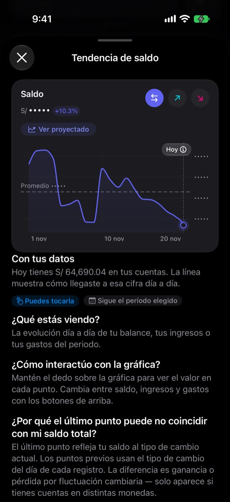
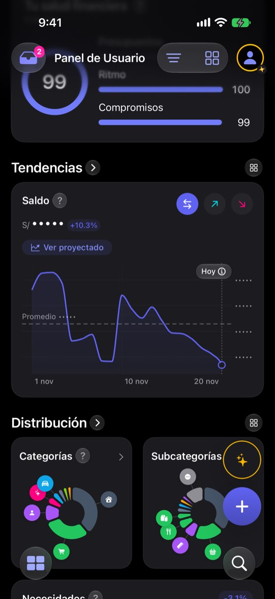

Con los montos ocultos, la ayuda de la gráfica dice el saldo exacto
ficha con el reloj del simulador en el 20 de noviembre de 2026: cuatro cuentas (Ahorros USD $33,615 · Cuenta Principal S/ −53,738.91 · Efectivo S/ 380 · Tarjeta de crédito S/ 1,284.30 por pagar), balance de noviembre S/ 6,882.40 (entró S/ 12,910.40, salió S/ 6,028), saldo total S/ 64,690.04 y una nota de salud de 99. El saldo negativo de la Cuenta Principal sale de cómo la semilla reparte dos años de gastos; aquí sirve para ver qué hace el Panel con una cuenta en rojo. Ninguna cifra es de una persona real.Lo que se ve hoy
- Observado Captura 19 (hoja de ayuda con montos ocultos) y 15-18 (el resto, bien tapado)
- Observado Código: la línea «Con tus datos» formatea sin la máscara (WidgetInfoSheet.swift:153-159)
- Observado Ticket en QA «Un ojo en el Panel para ocultar los montos»: porcentajes y forma visibles, por decisión


Con tus datos
Hoy tienes S/ 64,690.04 en tus cuentas. La línea muestra cómo llegaste a esa cifra día a día.
Puedes tocarlaSigue el período elegidoAlternativas
Todas con el mismo caso. Las cifras salen de las capturas salvo donde la maqueta dice «ilustrativo».
La ayuda respeta el ojo
«Con tus datos» usa la misma máscara que el Panel.
Con tus datos
Hoy tienes S/ ••••• en tus cuentas. La línea muestra cómo llegaste a esa cifra día a día.
Puedes tocarlaSigue el período elegidoA favor
- Arreglo de una línea, coherente con todo el Panel
- Entra en el ticket que está en QA
En contra
- La frase pierde el dato que la hacía útil
Sin «Con tus datos» mientras esté oculto
La parte personal desaparece y un aviso explica por qué.
A favor
- No enseña una frase a medias
En contra
- Un estado más de la hoja que probar
Discreto también con los %
Además de los montos, se tapan los porcentajes.
A favor
- Un porcentaje + una cifra visible en otra pantalla ya no permiten deducir nada
En contra
- Contradice lo que el ticket del ojo decidió
- El Panel oculto se queda casi sin información
Lado a lado
| A | B | C | |
|---|---|---|---|
| Cierra la fuga | Sí | Sí | No (otra cosa) |
| Reabre el ticket del ojo | No | No | Sí |
Recomendación
A, como corrección del ticket del ojo que está en QA. C solo si Jürgen quiere un modo discreto más fuerte.
Decide Jürgen
¿Se corrige la ayuda con la máscara (A) o se calla (B)? ¿Se reabre que los porcentajes se vean (C)?
Revisión por vistas 2.3 · Panel · 7-nov-2026. Capturas del simulador (build Debug de origin/2.3, iPhone 17 Pro e iPad Pro 13, iOS 27.2, modo oscuro, datos ficticios). Los siete perfiles son lentes simuladas, no entrevistas.